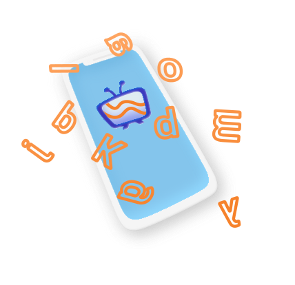
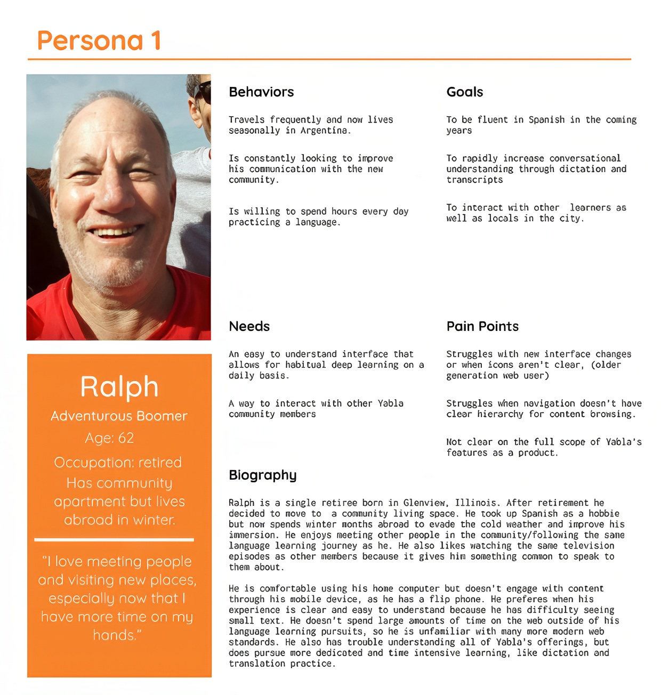
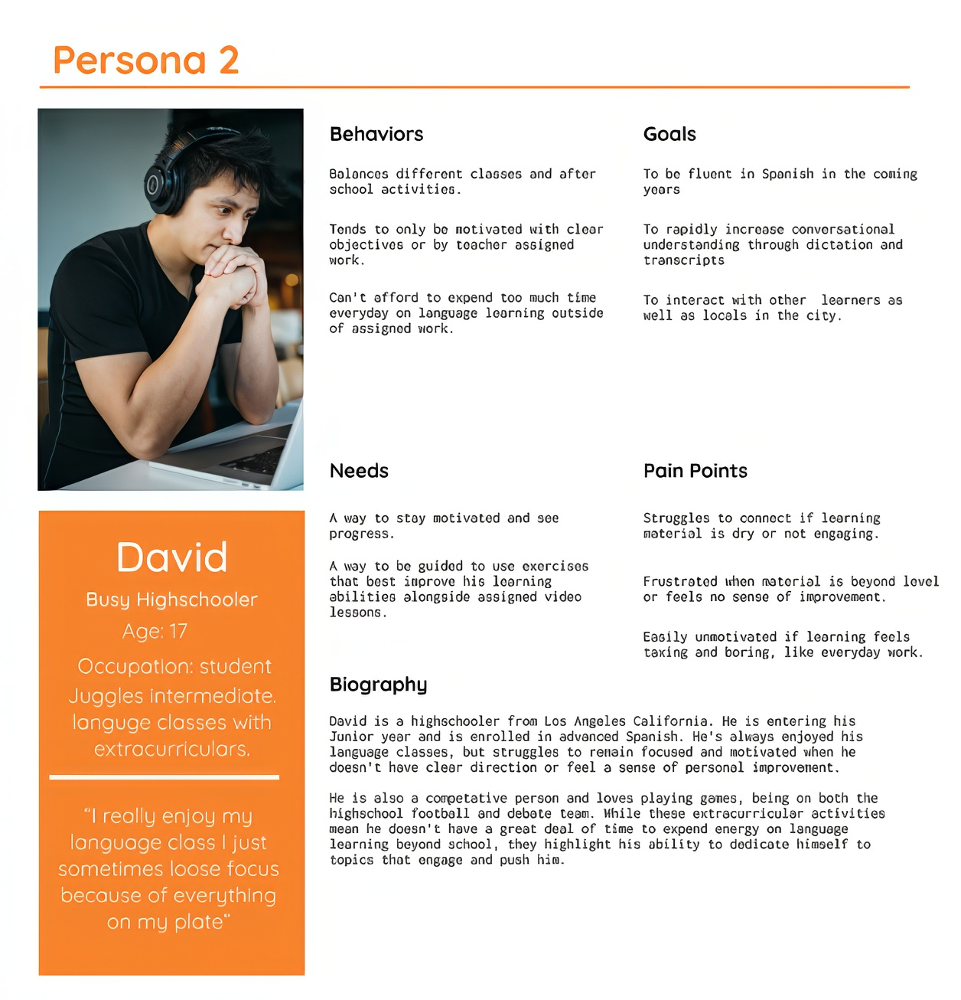
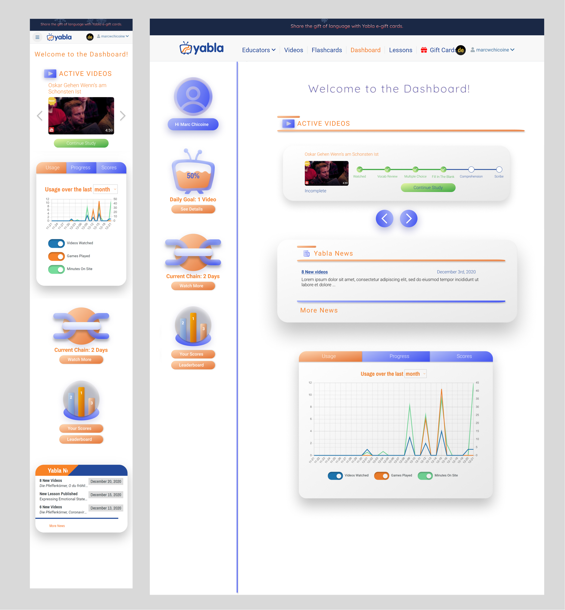
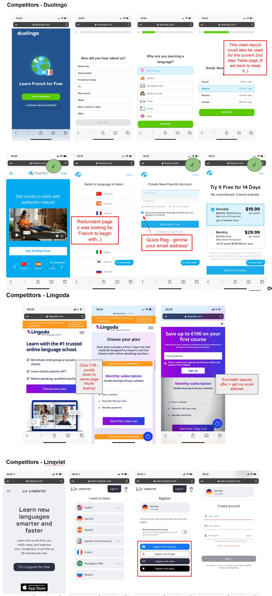
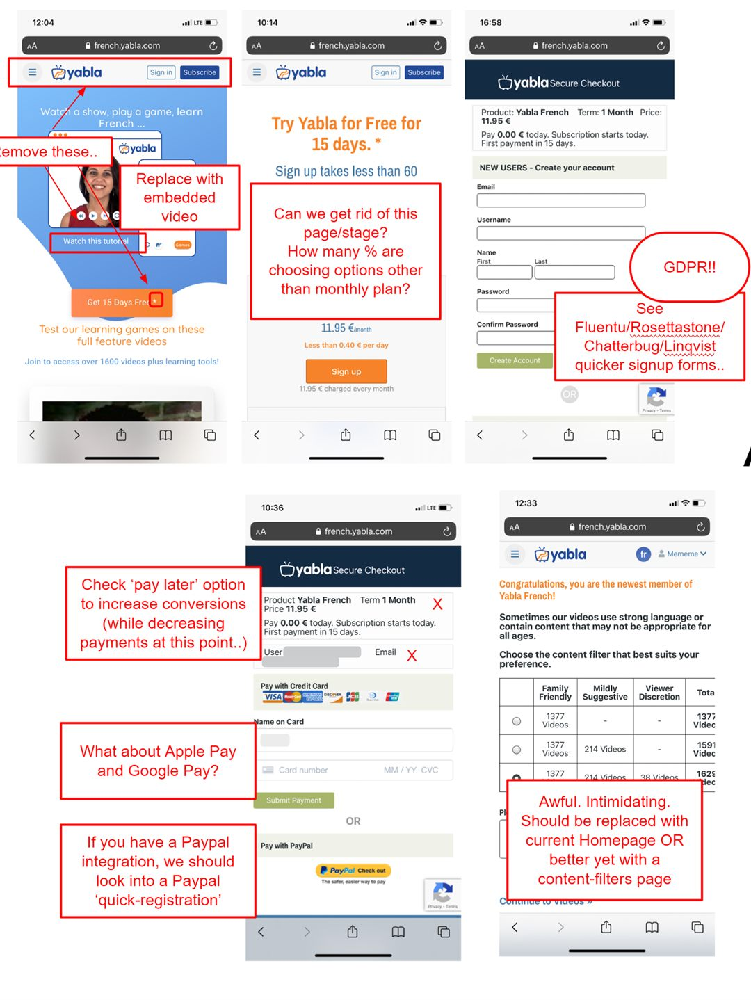
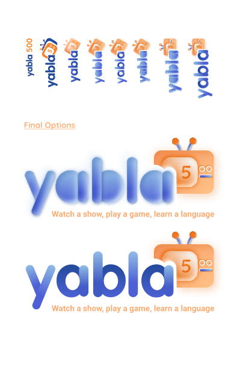
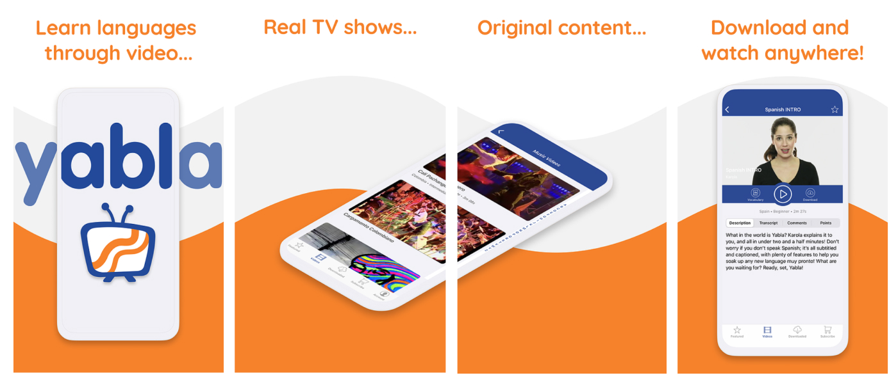

About
Yabla is a video language learning service across 6 languages. It features licensed television shows with accompanying learning games to offer a sandbox modelled immersive learning experience.
Position: Design Consultant
Length: 3 Years
Tasks: User testing, user interviews, comparative audit, gamification, front end development, new landing page, interface redesign, logo redesign, graphic/social content, styleguide, ad artwork.

Yabla is a video language learning service across 6 languages. It features licensed television shows with accompanying learning games to offer a sandbox modelled immersive learning experience.

25 informational interviews
Use questionaire with 400+ responses
Usertests with 10 users to check navigation and onboarding

How might we help instill Yabla as a daily habit for language aquisition?
How might we meet users based on their level, time committment, and interests?
1) New User Dashboard: Increase use rates by introducing a central space for users to track personal metrics, scores with one another, view new updates in a news style bulletin. Basically a launch pad for each user.
2) New Landing Funnel: Mobile first design and based on an audit of comparative brands in order to a/b test and improve initial conversion.
3) Branding and Style Guide Update: Modernize the brand for younger users and school accounts, and develop a cohesive style guide throughout.

Interface for a User Dashboard, now implemented for all signed in users on the Yabla top navigation. (More product designs available upon request...)
We analyzed the landing funnels of multiple Yabla competitors in order to understand their user flow and how Yabla's compared.

We then performed an audit of the existing landing with mobile first design in mind, and suggested improvements.

This culminated into a trial landing page based on this prototype I designed and coded, which increased conversions by 18% via A B testing.

Logo Concepts - Yabla 500 Mini Package
Created for the Yabla doNYC 2020 partnership.
Created to showcase Yabla's patented dictation game to the German market.
Created to showcase Yabla's custom videoplayer and to act as a paywall banner.
Animated 3d outro for Yabla exclusive shows. (Created via blender)

Artwork and metadata for all iOS and Android app versions across language products.
(More graphic content available upon request...)

The style update and landing funnel ultimately improved individual Yabla user retention.
Dashboard and gamification activities increased average use of power users based on beta tester feedback. The learning activities also provide a teaching scaffolding for school systems.